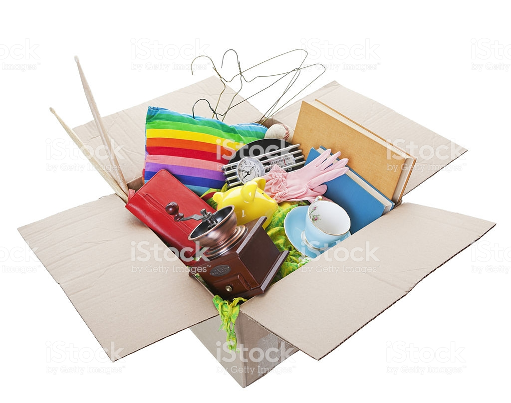

Javascript & React testing
Author: Grzegorz Rozdzialik
Concepts covered
Types of tests
- unit tests
- integration tests
- end-to-end tests
- visual tests
Testing libraries and tools
Integrating tests into CI
Pros and cons of testing
Hints on writing testable code
A story of developing a feature
API returns an array of the following objects:
{ "year": 1753, "month": 1, "temperature": 7.29 }Map each temperature to a specific color
Display the chart (e.g. using
recharts)
Naive approach
Class with state
Naive approach (using hooks)
Declare state
Renders fine, but what are the downsides?
Downsides
- Multiple concerns in one file/function (data fetching, data processing, handling errors, rendering results)
- Mixed concerns could be harder to read and comprehend
- Difficulty in automated testing
What is automated testing?
How to test this component?
Let's extract pieces and test them separately
aka. unit testing - testing a single unit (of a program) at a time, in isolation
Data processing that could be extracted
Extracted function that processes data points
A naive test
const result = processChartPoint({ year: '2010', month: '1', temperature: 8 })
if (result.color !== 'red') {
console.error('Color is wrong for temperature = 8')
}
But wait, there are libraries for that
- Assertion libraries
- Test runners
Test runners
- provide structure of tests and methods to declare them
- provide utility methods that run before/after each/all tests
- run tests
describe('Global temperature chart', () => {
describe('processChartPoint', () => {
it('should map temperature below 5 to blue', () => {
// invoke `processChartPoint` and use an assertion to test the result
})
})
})
A full test
Run tests
- Each test runner has its own configuration
- I recommend jest as it seems the easiest to set up
- jest is the default tool in create-react-app
jest process-chart-point.js
# Or, to run tests after every change
jest process-chart-point.js --watch


Workshop preparation
- Clone https://github.com/Gelio/js-testing-workshop
- Run
npm install - Enter the
workshop/srcdirectory
Task 1
- Checkout the
task-1branch - Write unit tests for
processChartPoint
- use
npm run test -- --watchto run the tests - make sure every case is covered
- try to not repeat code
- maybe there is a way to write a single test, but with different inputs?
What to test next?
Extracted data-fetching part
Notice any problems?
Why issuing network requests in tests is not a good idea?
Increased test duration (imagine fetching that data in multiple tests)
A network request may fail (or timeout)
Not much control over the amount of retrieved payload
What if we wanted to cover multiple cases, e.g. empty file, file with data set 1, file with data set 2, etc.
How to mitigate the problem?
Dependency injection (DI) - injecting a necessary piece of code (a function, an object) to a component dynamically at runtime instead of using a direct static link in the code
Data-fetching with dependency injection
How does it help?
fetch can now be mocked - only imitate a real network request, but return fake data
Task 2
getGlobalTemperatureChartData still uses a real processChartPoint
- Checkout branch
task-2 - Provide
processChartPointas a dependency - Write tests to fully test
getGlobalTemperatureChartData(all cases)
- experiment with jest's
jest.fn(mock) - see what spy functions are available via
jest.fn(e.g..toHaveBeenCalled)

Cases to be tested in task 2
- happy path - network request succeeds
- network request succeeds, but returned data is in wrong shape (not an array)
- network request fails
GlobalTemperatureChart after extracting its dependencies
Notice, that wanting to test this component resulted in clearer code
Dependency Injection in React (using props)
Dependency Injection in React (using context)
Math time

Functional programming digression
getGlobalTemperatureChartData is now a pure function and maintains referential transparency
Pure functions
- Does not use any external symbols or global state.
- Uses only its parameters
- Is easy to test, as it does not require any particular global setup
Referential transparency
Invoking the function with the same arguments yields the same results
Does not rely on global state
The function invocation can be replaced with its return value and the behavior of the program should not change
const result = someFunction()should be exactly the same as
const result = /* the return value of someFunction(); */
TDD - Test Driven Development
alternative way of development
writing tests before writing code (tests are red)
then, writing just enough code so that tests pass (tests are green)
writing more tests to cover other cases
TDD example
We will try to write this function complying to an extreme TDD approach
Test coverage
- codebase analysis that provides a useful and measurable metric
- displays lines of code that were run during tests
- useful to determine branches of execution (
ifs,switches, etc.) and functions that are not tested - in an ideal world, code coverage should be increased with each PR
Tools: jest (by default), nyc

Test coverage live
- Checkout branch
task-3 - Run
npm run test -- --coverage - Take a look at the generated coverage
- Notice which functions and branches are not covered
- (optional) Create more tests and see how the coverage changes
A word about CI

Testing in CI
CI - Continous Integration
- running some processes after each commit/push on a separate machine (usually in the cloud)
- processes include: building the app, linting, testing
- faster code verification (e.g. reviewers do not have to build the code themselves to see that linting fails)
- PRs may be temporarily rejected if CI fails
Example CI services: Travis CI, CircleCI, Azure Pipelines, Jenkins
Most are free for public, open source projects
Example CircleCI configuration
Understanding legacy code through tests
- faced with complex, legacy code
- instead of trying to take it in all at once, try writing tests
- they will serve as documentation
- they will help understand that code
- they will help catch regressions in case of a refactor
Unit tests summary
- test single components/functions in isolation
- fast
- small
- relatively easy to write
- serve as basic documentation
- can help understand complex legacy code
- very useful for testing business logic (pure functions, functions that process data, reducers, etc.)
- do not guarantee that the app will ever work (does not integrate modules)
Unit tests guidelines
- Use Dependency Injection and mocks to isolate modules/components into units
- Use spies (mocked functions) to test if a function has been invoked and what were the arguments
- Use code coverage reporting tools to determine how much of the project is covered by tests
- Integrate testing into your CI pipeline for fast verification
- Do not obsess trying to get code coverage to 100%
- Do not obsess with mocking everything
Integration
Integration tests
Test multiple modules and their interactions
Sometimes it is hard to tell whether the test is an unit test or an integration test.
Sometimes mixed tests are used (some dependencies are mocked, some are not).
react-testing-library
- renders React components in a test environment
- allows component interaction (component lifecycle, user events, etc.)
Component to be tested
GlobalTemperatureChart with a twist
Integration tests
Integration tests task
- Checkout
task-4branch - Write 2 more tests: check the success path and the error path
- Observe the results of
npm run test
ignore the warnings about An update to ... and The callback passed to ...
They are due to testing hooks, which is not yet fully supported
those would not be problems with regular classes
End-to-end tests
cypress
- friendly API that looks synchronous
- a dashboard for inspecting tests step-by-step
- allows taking screenshots and saving pages to PDF
- can capture video of a test
- only withs with Chrome and Electron
Cypress example
E2E test using Cypress
E2E task
- Checkout branch
task-5 - Edit
App.js: add a decrement button and displaytext, but reversed - Add tests for the newly added behavior
- use
npm run cypress:opento open Cypress GUI - use
npm run cypress:runto run a test suite in the console
Visual tests
Visual testing
- components can be displayed in isolation
- screenshots of the app can be compared across commits
- visual differences can be found by diffing the screenshots

Example visual test
Testing summary
Glossary
- assertion libraries
- test runners
- AAA - Arrange, Act, Assert
- Dependency Injection
- mocking
- spies
- code coverage
- CI - Continous Integration
- Test Driven Development
- pure functions
- referential transparency
Thank you for your participation!